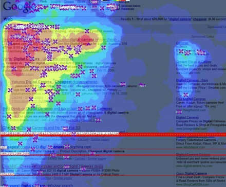
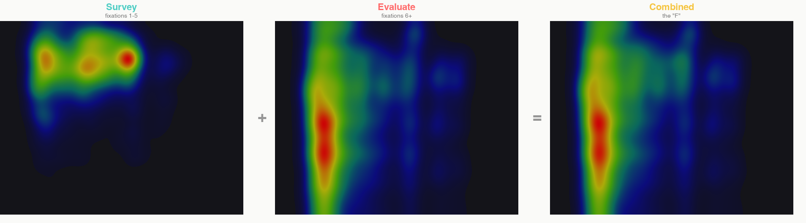
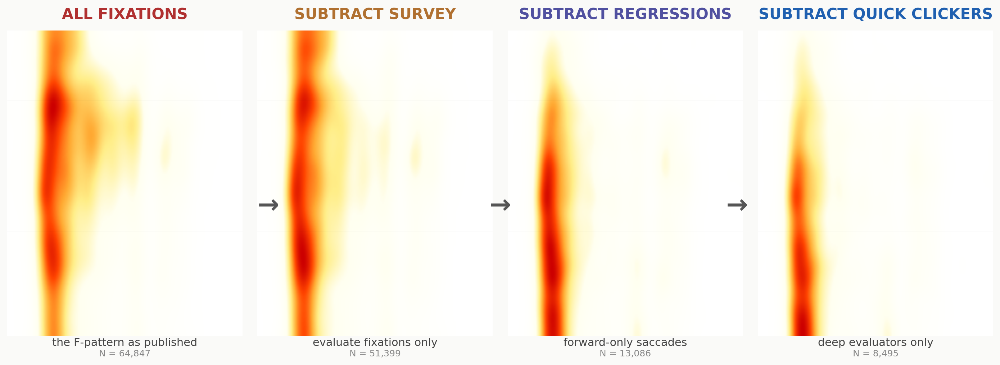
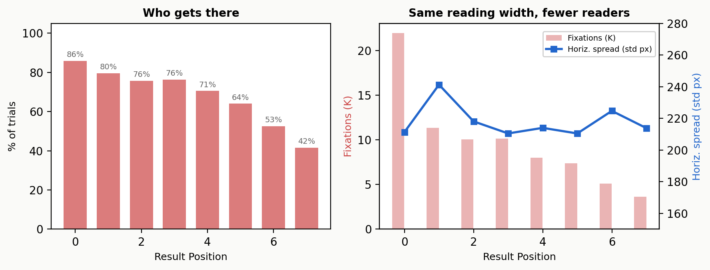
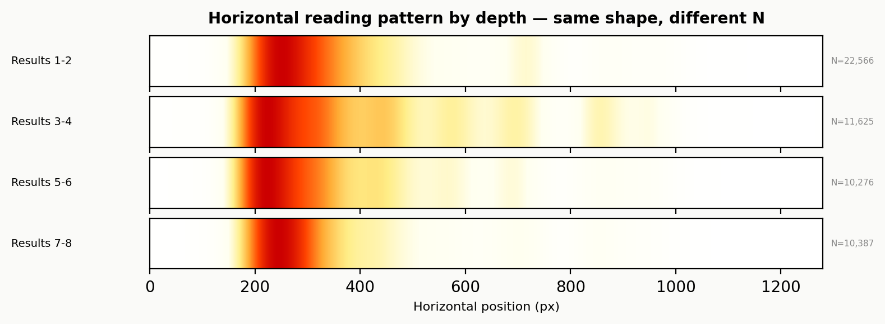
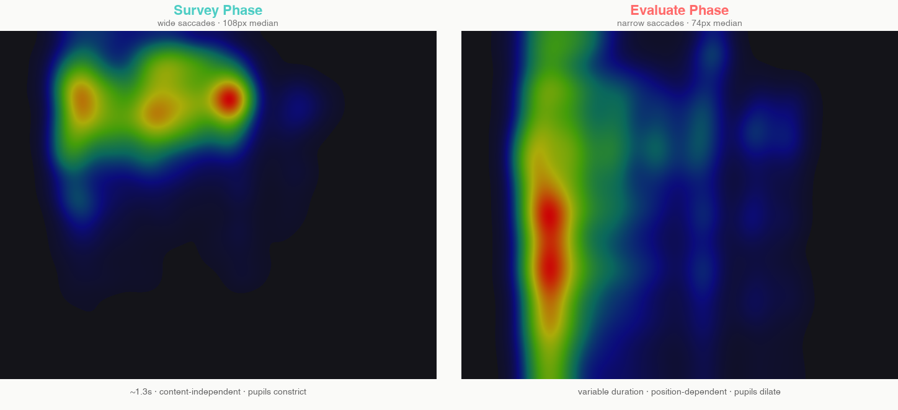
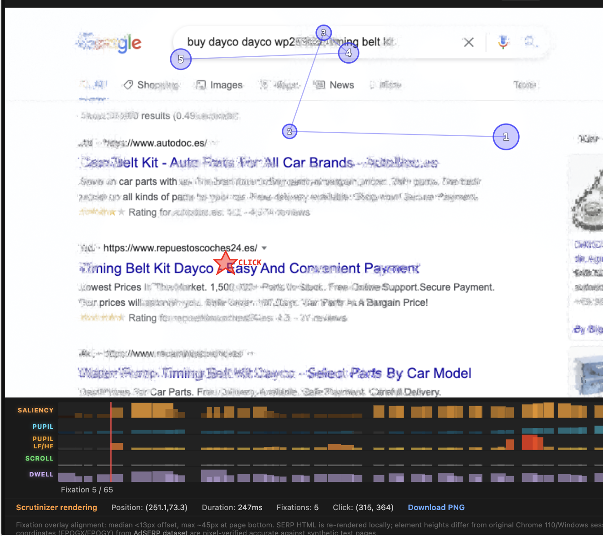
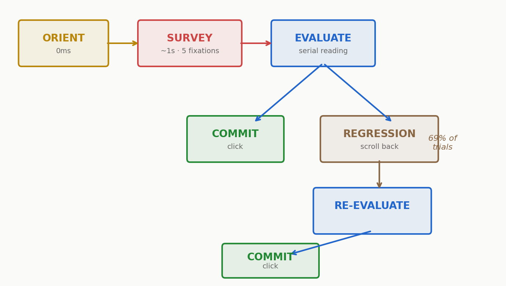

Image: NNG. Nielsen's team studied the F on general web pages; their 2017 follow-up identified five other scanning patterns, specified the F as a conditional fallback, and acknowledged users are "globally rational." The F-on-SERPs extrapolation was mostly the industry's work. Our analysis is SERP-specific.
You may know this image. The F-pattern — horizontal bars at the top, vertical stem down the left. In 2006, Nielsen's F was a sledgehammer that broke the industry's assumption that users read websites like novels. That was a necessary correction. The F became the most recognized finding in web design, widely applied to search results pages.
A heatmap collapses time. It shows where people looked, never when. Nielsen's team worked with the eye trackers of 2006 — typically 30–60Hz, no pupil measurement, aggregate heatmaps as the primary analysis tool. Today we have 150Hz tracking with simultaneous pupillometry, per-fixation timestamps, and datasets large enough to detect phase transitions within individual trials. On search results pages — where the F-pattern's influence on design runs deepest — we can now replay the tape frame by frame.
From years of eye-tracking studies and SERP experiments at eBay, Microsoft, and Meta, I've suspected the first moments on a results page involve a distinct sampling phase before committed reading. The AdSERP dataset (Latifzadeh, Gwizdka & Leiva, SIGIR 2025) — 2,776 sessions at 150Hz with pupillometry — finally gave enough resolution to test it. We're writing up the full analysis; along the way, the F-pattern fell out of the decomposition.
Two operations, one letter.
The F is two operations painted on top of each other:
The horizontal bars are the survey phase. For about one second, the eyes make wide jumps across the result set — sampling titles, not reading them. Pupils constrict. It's cognitively cheap.
The vertical stem is the evaluate phase. The eyes narrow into serial reading — left to right within each result, then down to the next. Pupils dilate. It's expensive.
Overlay them and the F emerges:

Strip them apart and the F disappears:

And the shorter lower bar? That's not narrower reading — it's fewer readers.
The original F-pattern description says users "read less" of results further down the page — the lower horizontal bar is shorter than the upper one. This has been interpreted as declining reading effort with position.
In these 2,776 transactional search sessions, it doesn't hold. Horizontal fixation spread (IQR of X coordinates during evaluate) is constant across positions:
| Position | X Spread (IQR) | X Std | Fixations |
|---|---|---|---|
| 0 | 237px | 211px | 21,941 |
| 3 | 244px | 210px | 10,147 |
| 5 | 244px | 210px | 7,383 |
| 7 | 214px | 214px | 3,634 |
Warning: The F narrows because the denominator drops — fewer users scroll that far — not because individual reading behavior changes. Users who reach position 5 read it with the same horizontal spread as position 1. The heatmap gets cooler because fewer trials contribute heat, not because people read less.
On these SERPs, the F's vertical fade is a survival effect masquerading as a scanning strategy. Any aggregate heatmap of scrollable content faces the same confound — it conflates "fewer people looked here" with "people looked here less carefully." The per-fixation data separates them.

The F is a useful shorthand. The real story is deeper.
"The first two paragraphs must state the most important information" (NNG). "Users Won't Read Your Website" (Little Fire). "Debunking the Myth of the Fold" (UXmatters). The F became a meme — and memes don't cite their caveats.
"Put important content at the top" is good advice — not because users read the top more carefully, but because most users won't scroll far enough to see the rest. The F-pattern captured this correctly as a spatial summary. Where the story went sideways was the reason:
- What the F-pattern showed: Heatmap is cooler at lower positions.
- What the industry inferred: Users read less carefully further down.
- What 2,776 SERP sessions show: Users who reach lower positions read them with the same horizontal spread (~210px std at every depth). The heatmap cools because fewer people get there — a scroll commitment problem, not a reading depth problem.
The distinction matters for design. If you think users can't read lower content (the F-pattern interpretation), you cram everything above the fold. If you know users who reach lower content read it normally (the survival interpretation), the design problem shifts: how do you earn the scroll?
Normalize the X distributions by depth and the illusion collapses. Positions 0–1, 3–4, and 6–7 all show the same horizontal fixation profile — same leftward peak at the title start, same rightward reading spread:

The F-pattern was the best we could do with aggregate heatmaps. Duchowski et al. warned at ETRA 2012 that heatmaps discard the temporal and cognitive dimensions of gaze data — two operations painted on top of each other look like one shape. The pupillometric methods Duchowski later developed (LHIPA, CHI 2020) recover exactly what the heatmap threw away: the cognitive cost of each fixation.
The F served the field well for twenty years. But it's a shorthand — and any dataset with per-fixation timestamps can decompose it. On SERPs, that decomposition reveals a richer, more actionable picture. Whether the same phase structure appears on news articles, e-commerce pages, or long-form content is an open question that the same methodology can answer.
Orient
Go deeper: Stored visual routines for familiar layouts connect to Hayhoe & Ballard's work on eye movements in natural tasks (Trends in Cognitive Sciences, 2005) — the visual system learns task-specific scanpaths that become automatic.
0ms to first fixation.The eyes land before the mind engages. Median orientation time: 0ms. 58% of first fixations land directly on a result. The SERP layout is memorized from thousands of prior searches — the user doesn't need to "find" the results. No learning effect across 60 trials per participant (ρ = 0.02, p = 0.30).
This is not reading. This is the visual system executing a stored motor plan: saccade to the content area, calibrate to the luminance, prepare for sampling.
Survey
The survey phase has not been reported before in the search literature. For approximately 1.3 seconds — exactly 5 fixations, regardless of what's on the page — the eyes execute wide saccades across the result set. Median amplitude: 108 pixels, compared to 74 pixels during subsequent reading.

This is gist sampling. The user is not reading results. They are building a rapid impression of what the result set contains: brands, price points, product types, relevance signals visible in peripheral vision.
The transition is detectable within individual trials: mean ρ = −0.114, p = 10⁻¹²⁸, N = 2,754. 69.6% show a negative slope.
Three lines of evidence that the survey is a distinct cognitive phase, not just "the first few fixations":
Content-independent duration. Survey length does not correlate with SERP difficulty, result similarity, or any content measure we tested. It's a fixed sampling routine — approximately 1.3 seconds, always.
Scroll-decoupled. The survey ends at fixation ~5. The first scroll happens at fixation ~21. In 94.6% of trials, the survey is complete before any scrolling occurs. The user evaluates ~16 fixations of first-viewport content between survey and scroll.
No post-scroll reset. When the user scrolls to new content, saccade amplitude does not spike back up. The survey happens once, at the beginning. Scrolling triggers direct evaluation, not re-sampling.
The metabolic cost of search
Per-fixation pupil diameter across 2,720 trials reveals a three-phase trajectory:
| Phase | Fixations | Pupil change | Interpretation |
|---|---|---|---|
| Orienting | 1–2 | +1.2% dilation | Arousal response to new stimulus |
| Survey | 3–5 | −3.0% constriction | Low-load gist sampling |
| Evaluate | 6–20 | Gradual recovery → 0% | Cognitive work intensifies |
Cheap to sample, expensive to read.The survey constricts pupils (p = 10⁻¹¹⁷ vs evaluate). It is cheap. The cognitive work comes later, during committed reading, where the pupil gradually recovers as working memory fills with candidates.
See it in action. This real session (p047-b1-t9) shows the survey phase — fixations 1–5 in the first second, clustered around the search bar and nav, then the LF/HF pupil spike as evaluate begins:

In this session, the participant internalized the query on the prior screen — orientation is instant, and the survey begins immediately. The pupil load coloring (blue = low load, red = high) shows the constriction→dilation trajectory in real time:
Interactive scanpath replay: p047-b1-t9 (mouse follower, 65 fixations). Press Play, then toggle "Color: Pupil Load." More sessions →
Evaluate
After the survey, the user transitions to serial reading. Saccades narrow. The eyes move within result snippets, not between them. Each result gets approximately 2 fixations and half a second — consistent from position 1 to position 8.
Each result gets a fair read. Per-result reading depth does not decline with position during forward scanning on these transactional SERPs. What declines is the probability of being reached at all — a function of scroll commitment, not reading effort. This may differ for informational queries or non-SERP content, where task motivation varies more widely.
By position 6, the user is holding 5+ candidates in working memory. The cost of evaluating one more against everything already seen is climbing. Pupil dilation increases monotonically with position (LHIPA ρ = −0.90 with click position), confirming the working memory load interpretation.
Tip: For ranked list designers: the bottleneck by item 6 is working memory, not result quality. Surface differentiators early and make comparison easy.
Commit
The commit decision follows one of two paths, visible in the behavioral data:
Go deeper: The satisficer/optimizer split maps onto information foraging theory (Pirolli & Card, 1999). Satisficers follow the marginal value theorem. Optimizers exhaust the patch. Azzopardi & Maxwell (ECIR 2018) modeled the stop decision but assumed single-pass examination — our regression data shows the patch gets revisited.
Same click, different mind.Satisficers click early (positions 1–4). Fast scrolling, shallow fixation depth, low pupil dilation. They found something adequate and stopped.
Optimizers click late (positions 7–10). Deep scrolling, scroll regressions back up the page, highest pupil dilation. They evaluated the full set and selected from a complete comparison. Position 10 clickers show the highest cognitive load of any click position — they read every result.
Position 10 clicks concentrate in homogeneous SERPs — where the results all look alike. When there aren't enough differentiating signals to form a strong preference, the rational response is to evaluate everything. The last result gets clicked not because the user gave up, but because discriminating between near-identical options requires seeing all of them.
The model
On SERPs, orientation is nearly instant — the layout is so familiar that the visual system skips calibration entirely. This may not hold for novel interfaces, but for any page a user has seen hundreds of times, the motor plan is stored.

69% of trials include at least one scroll regression — a return to previously evaluated content. The regression rate correlates with decision time (r = 0.66). Scroll regressions are not noise; they are the behavioral cost of comparison under working memory load.
The existing literature has gone remarkably far with the single-pass, top-down examination assumption. But 69% of these trials violate it. OSEC adds what the data shows: examination is a multi-pass process with distinct cognitive phases, and the interesting decision-making happens not at the stopping point but at the re-evaluation point.
The same simplification, twice
The F-pattern and search ranking algorithms make the same assumption from different directions.
The F-pattern says: "Users scan in an F shape." But the same simplification runs deeper. Every time you click a search result (or don't), the search engine updates a mathematical model of how likely you are to examine each position on the page. These "click models" are how Google, Bing, and every other engine learn which results are good — they're the mathematical backbone of search ranking. The dominant ones — cascade (Craswell et al., 2008), DBN (Chapelle & Zhang, 2009), UBM (Dupret & Piwowarski, 2008) — all assume the same thing the F-pattern assumes: users examine results top-down with a single, monotonically decreasing probability. One behavior, top to bottom.
Neither the visual heatmap nor the mathematical model accounts for the survey phase. In both, its fixations get merged with evaluate fixations, and the two-operation structure collapses into a single pattern or a single probability. Liu et al. (2014) came closest with a two-stage "skimming then reading" model, but without per-fixation saccade evidence they couldn't separate gist sampling from early reading.
This isn't a criticism. Nielsen's heatmaps, Craswell's cascade model, and the twenty years of work built on them were correct at the resolution available. You can't decompose temporal phases from aggregate spatial heatmaps. You can't separate survey from evaluate without per-fixation saccade kinematics and pupillometry at scale.
What changed is the resolution. The saccade amplitude transition is detectable within individual trials (p = 10⁻¹²⁸). The pupil signature separates the phases at p = 10⁻¹¹⁷. These aren't subtle aggregate effects — they're robust per-trial phenomena that previous datasets were too small or too coarsely sampled to detect.
The F-pattern wasn't a map of how we read. It was a long-exposure photograph of two different behaviors. We just needed 150 frames per second to watch it get drawn.
The F-pattern: then and now
| Feature | 2006 Interpretation (NNG) | 2026 Decomposition (AdSERP) |
|---|---|---|
| Shape cause | Declining interest/effort over distance. | Two distinct behaviors (Survey + Evaluate) overlaid. |
| Lower horizontal bar | Users read less of the lower content. | Survival effect: Fewer users reach that depth. |
| First 1.3 seconds | "Early reading." | Survey phase: Cheap gist-sampling (pupil constriction). |
| Vertical stem | A downward scan. | Evaluate phase: High-load serial reading (pupil dilation). |
| Design advice | Put important content at the top. | Still true — but because users don't scroll, not because they can't read. |
Data and methods
Tip: Open data, open analysis. 13 reproducible notebooks, interactive scanpath replays with foveated vision rendering, per-fixation pupil overlays, and all statistical tests: github.com/andyed/attentional-foraging. Interactive demo: andyed.github.io/attentional-foraging/.
All analysis uses the AdSERP dataset (Latifzadeh, Gwizdka & Leiva, SIGIR 2025): 2,776 transactional product search queries, 47 participants, simultaneous 150Hz eye tracking, mouse tracking, scroll recording, and pupil diameter. Scanpath replays render each session through Scrutinizer, a neuroscience-based peripheral vision simulator. Fixation positions are anchored to DOM elements for pixel-accurate overlay at any viewport width.
Academic references
- Latifzadeh, Gwizdka & Leiva (2025). AdSERP: A large-scale dataset for studying attention on SERPs. SIGIR.
- Duchowski et al. (2020). The Low/High Index of Pupillary Activity. CHI.
- Duchowski et al. (2012). Aggregate gaze visualization with real-time heatmaps. ETRA.
- Craswell et al. (2008). An experimental comparison of click position-bias models. WSDM.
- Liu et al. (2014). From Skimming to Reading: A Two-stage Examination Model. CIKM.
- Pirolli & Card (1999). Information foraging. Psychological Review.
- Hayhoe & Ballard (2005). Eye movements in natural behavior. Trends in Cognitive Sciences.
- Kahneman & Beatty (1966). Pupil diameter and load on memory. Science.
- Edmonds (2003). Uzilla: A new tool for web usability testing. Behavior Research Methods.
The F-pattern conversation
- Nielsen (2006). F-Shaped Pattern for Reading Web Content. NNG — the original.
- Pernice (2017, updated 2024). Misunderstood, But Still Relevant. NNG — the correction.
- Friedman (2024). F-Shape Pattern And How Users Read. Smashing Magazine.
- Whitfield. No, You Shouldn't Use the F Pattern in UX Design. Medium.
- Users Won't Read Your Website. Little Fire Agency.
- Debunking the Myth of the Fold. UXmatters, 2020.